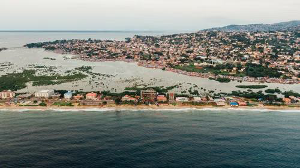

Global Coordination. Local Operations.
Anchored in the United States for global support; rooted in Sierra Leone for community transformation.
Sierra Leone
Our on-the-ground hub is in Mattru Jong, where AYM's Global Assembly and the Global Assembly of Founders Circle coordinate national and international programs.
- GLASE partnership advancing local entrepreneurship.
- Staff grew from 7 to a growing team of employees.
- Youth enterprises from power services to agriculture.
- Continued community response, including support during the Ebola outbreak.

Micro-enterprises creating real jobs
Power & Charging Services
Youth-run power and phone-charging micro-enterprises generating reliable income.
The Mattru Jong Transformation
100+ acres along the Jong River being developed into an enterprise and ecotourism base.
Our goals for the site
Social Enterprise & Ecotourism Base
An incubator for youth-led ventures and sustainable tourism.
Educational & Cultural Hub
A center for training, learning and cultural exchange.
Developing 100+ Acres
Land along the Jong River for agriculture, enterprise and conservation.
AYM in the United States
Incorporated in Wisconsin, our U.S. office provides the legal, fundraising and coordination backbone for chapters worldwide.
Chapter Responsibilities
Resource Mobilization
Raise funds and secure grants to power programs.
Volunteer Management
Recruit, onboard and support local volunteers.
Chapter Expansion
Grow the Pan-African network city by city.
Want to join us and connect with individuals globally together?
Lend your skills to empower local communities and shape sustainable youth-led futures.
Become a Volunteer →Want to become a part of our AYM chapters?
Bring the movement to your city or country and lead grassroots change.
Start an AYM Chapter →Want to explore our extensive array of products?
Each purchase gives purpose and supports youth-led programs.
Explore Store →Still have questions?
Can't find the answer you're looking for? Please chat to our friendly team.